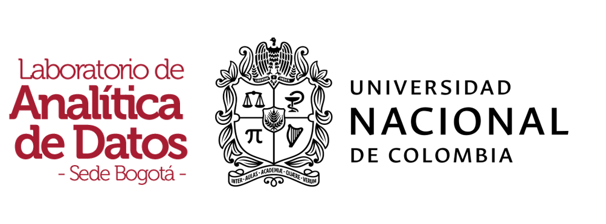

Preparar las herramientas
Configuración y conexión con modelos de lenguaje.

Diseño de agentes de inteligencia artificial
La nueva generación de
chatbots inteligentes
Apertura del curso · 24 de octubre de 2026
Aprenderemos a construir asistentes propios y a reconocer cuándo aportan valor a un problema real.
Nuestra ruta de aprendizaje
Comprender cómo funciona un RAG, construirlo y decidir en qué escenarios utilizarlo.
Configuración y conexión con modelos de lenguaje.
Representaciones vectoriales y búsqueda semántica.
Recuperación de información, generación y diseño de prompts.
Interfaz, despliegue y documentación del chatbot.
DataLab en acción
minutos por demostración
Ejemplos de aplicaciones desarrolladas por el DataLab en el ámbito de la seguridad.
En varias sesiones, el equipo compartirá desarrollos para conectar los contenidos con problemas de aplicación.Aplicaciones con propósito
Una base comúnInformación de la organización disponible para varias personas.
Agentes con contextoConocimiento relevante para apoyar decisiones y automatizar tareas.
Opción de despliegue localMayor control sobre los datos y menor dependencia de servicios externos, según la arquitectura.
Ejemplos del equipo de
Conoceremos aplicaciones y sistemas RAG desarrollados por su equipo para trabajar con el conocimiento de las organizaciones.
Conocer Umbrateliers ↗¿En qué problema de su trabajo tendría sentido usar un RAG?